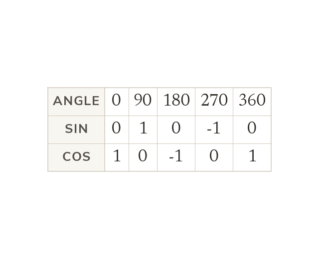
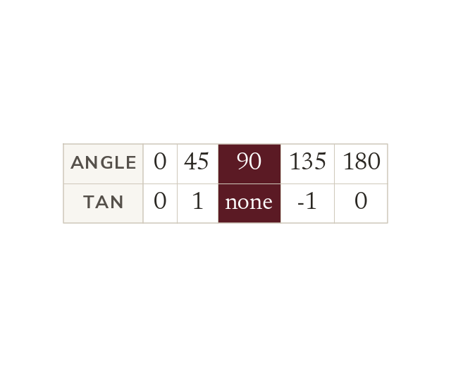
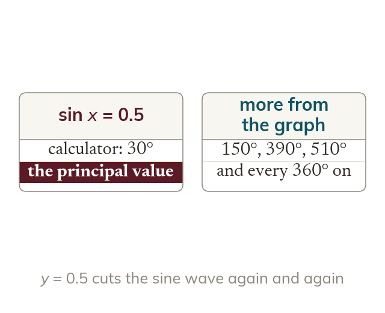
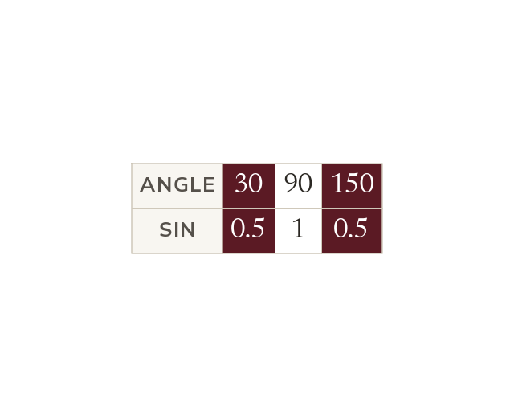

Sine and cosine waves
Sine and cosine repeat every 360°, between -1 and 1. Cosine is the sine wave shifted 90° to the left.
Every sine, cosine or tangent equation has infinitely many answers. The graphs show where they all are, and why a calculator only ever gives one.
Work down the page at your own pace. Write every answer in your book first, then click to check it.
Read each card, then follow the worked examples one step at a time.

Sine and cosine repeat every 360°, between -1 and 1. Cosine is the sine wave shifted 90° to the left.

Tan repeats every 180°, not every 360°. It has a vertical asymptote wherever cos is zero.
Pick an answer. If it's wrong, the feedback tells you which mistake it was.
Sections 6.8 The sine and cosine graphs (p168-169) and 6.9 The tangent graph (p170). Neither section has an exercise of its own: their practice comes in Exercise 6E (p170-173).
Read each card, then follow the worked examples one step at a time.

A repeating graph meets a horizontal line infinitely often. A calculator gives just one solution: the principal value.

The graph's symmetry places the other solutions. Sine's peak at 90° mirrors 30° onto 150°.
Pick an answer. If it's wrong, the feedback tells you which mistake it was.
Exercise 6E (p170-173), in section 6.10 Solution of trigonometric equations: the basic equations over 0° to 360° or -180° to 180°. Leave the questions that need rearranging for the next lesson.
Finished? Next lesson: 6.10b Solving Trigonometric Equations.
Log in, then search for a code to practise that skill.